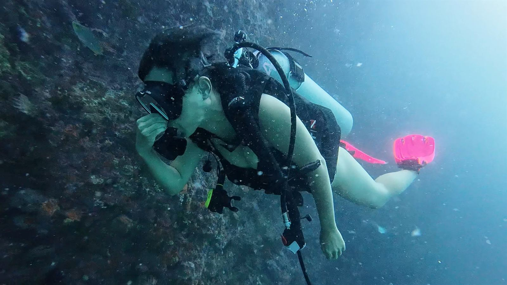
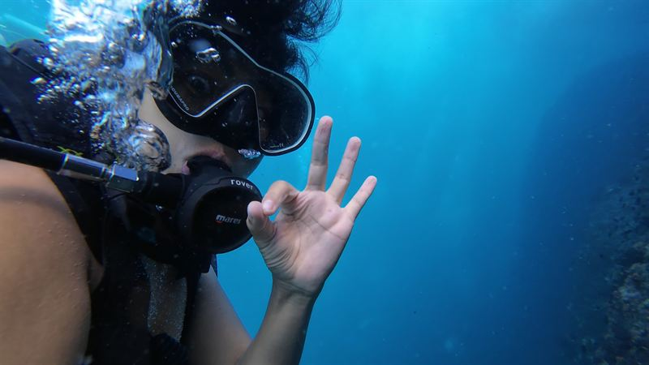
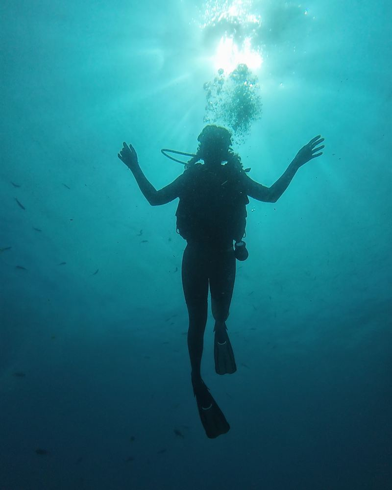
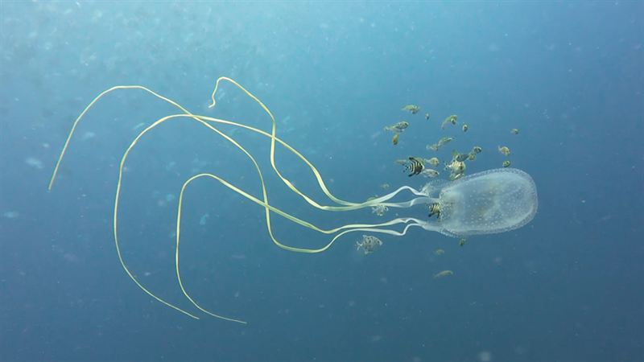
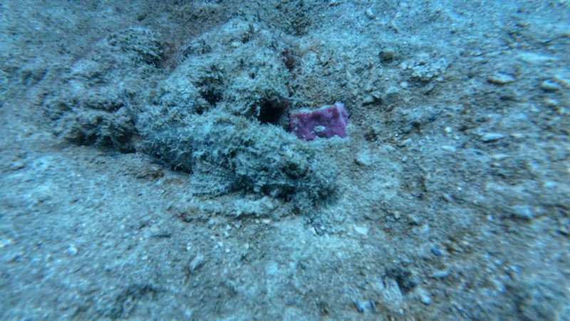

Una sola inmersión sin descompresión
Espera al menos 12 horas antes de volar.

Inicio / Salud y seguridad
Las preguntas que nos hacen cada semana en el barco: ¿cuándo puedo volar?, ¿puedo bucear resfriado?, ¿la diabetes es un problema?, ¿cómo se nota la enfermedad descompresiva? Aquí tienes respuestas claras, basadas en las recomendaciones de Divers Alert Network (DAN).

Estar bien es la primera regla
Antes de bucear
Todos los buceadores rellenan un breve cuestionario médico. Contéstalo con sinceridad: algunas condiciones solo necesitan la firma de un médico antes de bucear, y es mucho mejor saberlo antes de que salga el barco.
Volar después de bucear
Después de bucear tu cuerpo aún guarda nitrógeno de más, y la menor presión de la cabina de un avión puede convertirlo en enfermedad descompresiva. DAN recomienda estos intervalos mínimos en superficie; cuanto más largos, mejor.
Espera al menos 12 horas antes de volar.
Espera al menos 18 horas. Es el caso de un día normal de dos inmersiones y de todos los cursos.
Espera al menos 24 horas.
El ferry no es problema: volvemos al muelle de Chaloklum hacia las 15:30, a tiempo para un ferry de las 17:00. Solo tienes que planificar tu último día de buceo según tu vuelo desde Koh Samui, Surat Thani o Bangkok.

Ascensos lentos, paradas de seguridad
Enfermedad descompresiva
La enfermedad descompresiva (ED) es rara en el buceo recreativo, y los ascensos lentos, las paradas de seguridad y respetar los límites de tu ordenador la hacen aún más rara. Pero todo buceador debería reconocerla, porque el oxígeno y el tratamiento tempranos marcan una diferencia real.
Si notas alguno de estos síntomas después de bucear, no vueles ni esperes a ver si se pasa: avísanos, busca ayuda médica enseguida y llama a la línea de emergencias 24 horas de DAN: +1 919 684 9111.
Bucear con diabetes
Muchas personas con diabetes bucean de forma segura. Las recomendaciones de DAN explican quién puede bucear y cómo controlar la glucosa en un día de buceo. Habla con tu médico, y avísanos a nosotros y a tu compañero antes de la inmersión.
Quién puede bucear
El día de buceo
Evita
Si notas cualquier síntoma durante la inmersión, avisa a tu compañero, termina la inmersión, sube a la superficie y hazte revisar.
Mirar sin tocar
Casi nada en el golfo de Tailandia es peligroso si no tocas nada y mantienes las aletas lejos del fondo. Algunos animales merecen un respeto especial.

Su picadura es muy dolorosa y puede ser grave. Si te pica, sal del agua, echa vinagre sobre la zona durante al menos 30 segundos, no frotes y busca ayuda médica.

Maestros del camuflaje con espinas venenosas. Nunca apoyes una mano o una rodilla sin mirar. Una picadura necesita agua caliente, tan caliente como aguantes, y un médico.
En todas partes
Las púas de erizo, el coral de fuego y algunas anémonas pican o cortan. Una buena flotabilidad es la mejor protección, para ti y para el arrecife.
Preguntas
DAN recomienda al menos 12 horas después de una sola inmersión sin descompresión, 18 horas después de inmersiones repetitivas o varios días de buceo, y 24 horas después de una inmersión con descompresión. Para un día normal de dos inmersiones o un curso, cuenta con 18 horas.
Mejor no. Con la nariz o los senos tapados es difícil o imposible compensar, y puedes dañarte los oídos. Los descongestionantes pueden dejar de hacer efecto durante la inmersión. Espera a respirar bien por la nariz.
A menudo, sí. Las recomendaciones de DAN permiten bucear a adultos con diabetes bien controlada, con controles de glucosa cuidadosos antes y después de cada inmersión y algunos límites de profundidad y tiempo. Habla con tu médico y avísanos antes de reservar.
El alcohol y la deshidratación aumentan el riesgo de enfermedad descompresiva y te hacen estar menos atento. Si has bebido mucho la noche anterior, retrasa tu inmersión un día; te la cambiamos encantados.
Los síntomas leves incluyen dolor en articulaciones o músculos, erupción o manchas en la piel y cansancio inusual. Los graves incluyen entumecimiento, hormigueo o debilidad, dificultad para caminar, confusión, mareo, dolor en el pecho o dificultad para respirar, y problemas de audición. Con cualquiera de ellos, no vueles, busca ayuda médica y llama a DAN.
No. No se recomienda bucear en ninguna fase del embarazo. Estás más que invitada a venir en el barco y hacer snorkel en Sail Rock.
A veces. Depende de lo controlada que esté y de qué la desencadena, así que necesitas que un médico te valore y firme el formulario médico antes de bucear.
Esta página es información general, no consejo médico. Si tienes cualquier duda sobre tu aptitud para bucear, consulta a un médico con experiencia en medicina del buceo o contacta con DAN.
Escríbenos por WhatsApp antes de reservar. Te diremos con sinceridad si necesitas antes la firma de un médico.